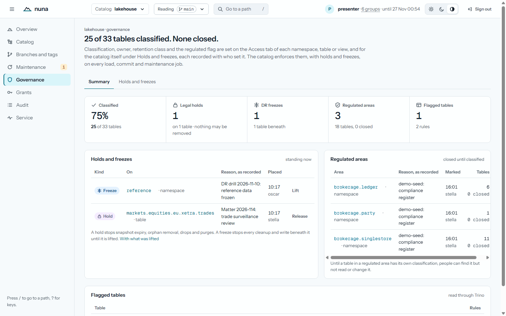
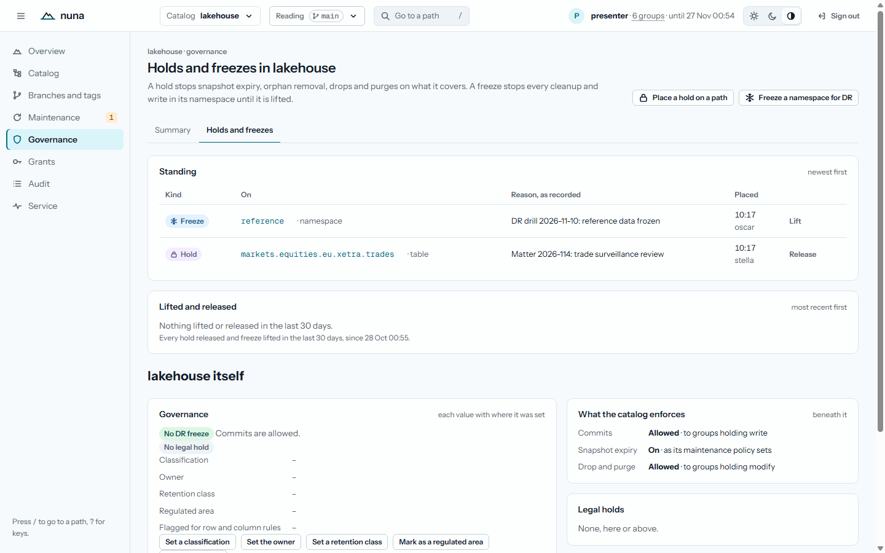

The Governance page
The Governance page answers, for data stewards and platform operators, how much of a catalog is classified, which legal holds and DR freezes stand, which areas are regulated and which tables are flagged, and lets them place and lift holds and freezes.

Who sees it
The rail always shows Governance; the server answers the summary and the holds list to anyone whose groups hold describe on the catalog. Placing and releasing a hold needs manage-tags; freezing and lifting a freeze needs a platform operator, and anyone else is refused with only platform operators may call setDrFreeze.
Summary
The title is x of N tables classified., then how many tables are closed until a steward classifies them, or None closed. "Classification, owner, retention class and the regulated flag are set on the Access tab of each namespace, table or view, and for the catalog itself under Holds and freezes, each recorded with who set it."
Five figures: Classified, Legal holds (nothing held when none), DR freezes (none standing), Regulated areas and Flagged tables.
- Holds and freezes
- Those standing now: Kind (Hold or Freeze), On, Reason, as recorded and Placed, with Release (manage-tags) or Lift (platform operators). Empty: "No hold or freeze stands in catalog." "A hold stops snapshot expiry, orphan removal, drops and purges. A freeze stops every cleanup and write beneath it until it is lifted."
- Regulated areas
- Each regulated namespace with its reason, when it was marked and how many tables are closed. "Until a table in a regulated area has its own classification, people can find it but not read or change it." Empty: "No regulated area in this catalog: an unclassified table stays open."
- Flagged tables
- Tables read through Trino, each with its number of rules. Empty: "No table in this catalog is flagged."
Holds and freezes
The second tab, Holds and freezes in catalog: "A hold stops snapshot expiry, orphan removal, drops and purges on what it covers. A freeze stops every cleanup and write in its namespace until it is lifted." Its panels are Standing, newest first, and Lifted and released, for the last 30 days by default ("Nothing lifted or released in the last N days." when empty).

Place a hold
Place a hold on a path opens Place a hold in catalog: "Name a namespace, table or view. The hold carries its reason for as long as it stands." Choose the Kind, write the Path (such as equities.daily, or equities.fills for a table), select Next, write the reason and select Place the hold. Only a steward can release it, with Release and then Release the hold; the hold and its release stay in the audit trail.
Freeze a namespace
Freeze a namespace for DR opens Freeze a namespace in catalog for DR: "Name the namespace. The freeze stops every commit and cleanup beneath it until it is lifted." Write the Namespace, select Next, write the reason and select Freeze. Lift, then Lift the freeze, ends it.
The catalog itself
Under catalog itself is the catalog's own governance panel, where a steward sets its classification and owner, marks it as a regulated area, or places a hold on the whole catalog, as on a table's Access tab.
From the command line
| In the console | Endpoint |
|---|---|
| Summary | GET /management/v1/catalogs/{catalog}/governance/summary (Governance) |
| Standing, Lifted and released | GET /management/v1/catalogs/{catalog}/governance/holds (Governance) |
| Place the hold; Release the hold | POST …/holds; DELETE …/holds/{id} on the object (Governance) |
| Freeze; Lift the freeze | PUT, DELETE …/namespaces/{ns}/dr-freeze (Governance) |
| The catalog itself | GET /management/v1/catalogs/{catalog}/governance (Governance) |
See also
- Governance: what each attribute, hold and freeze does.
- Place and lift a legal hold: the task step by step.
- Freeze and unfreeze for disaster recovery: the DR freeze.
- The table page's Access tab: governance on one table.
How this page was checked
Written from the console's governance.js and panels.js, and from GovernanceRoutes.java and ManagementGuard.java, checked against commit b3e8582f on 2026-11-26.
The console was not driven in a browser. The demo's summary and holds were read with GET requests.